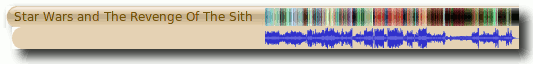

Moodbar
Dieser Artikel wurde für die folgenden Ubuntu-Versionen getestet:
Dieser Artikel ist mit keiner aktuell unterstützten Ubuntu-Version getestet! Bitte diesen Artikel testen und das getestet-Tag entsprechend anpassen.
Zum Verständnis dieses Artikels sind folgende Seiten hilfreich:
Moodbar  bzw. das Stimmungsbarometer ist eine Funktion der Musikprogramme Amarok 2 und Exaile, mit der die Stimmung eines Liedes visuell auf einem Balken dargestellt werden kann (siehe Funktionsweise). Diese Funktion steht ab Amarok 2.2.2 (wieder) zur Verfügung.
bzw. das Stimmungsbarometer ist eine Funktion der Musikprogramme Amarok 2 und Exaile, mit der die Stimmung eines Liedes visuell auf einem Balken dargestellt werden kann (siehe Funktionsweise). Diese Funktion steht ab Amarok 2.2.2 (wieder) zur Verfügung.
Hier als Beispiel die Moodbar des Anfangsstückes von Star Wars Episode III, welches sehr unterschiedliche Abschnitte besitzt. Als Vergleich dazu darunter die normale Hüllkurve: 
Installation¶
Moodbar kann direkt aus den Paketquellen [1] installiert werden
moodbar (universe)
 mit apturl
mit apturl
Paketliste zum Kopieren:
sudo apt-get install moodbar
sudo aptitude install moodbar
Das Programm greift auf die Codecs von GStreamer zurück, welche gegebenenfalls noch zusätzlich installiert werden müssen, sofern sie nicht vorhanden sind. Um alle von Moodbar unterstützten Audioformate (MP3, Ogg, Flac, MP4, Musepack, WMA) verwenden zu können, stehen dazu die Pakete
gstreamer0.10-plugins-ugly (universe)
gstreamer0.10-plugins-good (universe)
gstreamer0.10-plugins-bad (universe)
mit apturl
Paketliste zum Kopieren:
sudo apt-get install gstreamer0.10-plugins-ugly gstreamer0.10-plugins-good gstreamer0.10-plugins-bad
sudo aptitude install gstreamer0.10-plugins-ugly gstreamer0.10-plugins-good gstreamer0.10-plugins-bad
zur Verfügung.
Zur Nutzung unter Exaile muss das Paket
exaile-plugin-moodbar (universe)
mit apturl
Paketliste zum Kopieren:
sudo apt-get install exaile-plugin-moodbar
sudo aptitude install exaile-plugin-moodbar
installiert werden.
Vorbereitung¶
Unter Amarok¶
Bevor das Stimmungsbarometer in Amarok als farbige Laufleiste angezeigt werden kann, muss für jeden Musiktitel eine .mood-Datei angelegt werden, die die Information über die Stimmung enthält.
Skript für Moodbar nachinstallieren¶
Es gibt ein Skript für Amarok, das zu dem aktuell laufenden Titel automatisch eine mood-Datei erstellt. Das Skript heißt „Moodbar Generator“ und kann über das Menü Extras -> Skript-Verwaltung -> Weitere Skripte holen hinzugefügt werden. Falls es das Skript nicht gefunden wird, sollte der folgende Abschnitt gelesen werden.
Eigenes Skript¶
Dieses Skript hilft bei der manuellen Erstellung der mood-dateien:
1 2 3 4 5 6 7 8 9 10 11 12 13 14 15 16 17 18 19 20 | #!/bin/bash control_c() # Den Vorgang abbrechen, wenn der Nutzer Strg+c drückt { echo $1 > lastreadsong echo "Exiting..." exit } if [ -e lastreadsong ]; then read filetodelete < lastreadsong rm "$filetodelete" lastreadsong fi find . -type f -regextype posix-awk -iregex '.*\.(mp3|ogg|flac|wma)' | while read i do trap 'control_c "$OUTF"' SIGINT TEMP="${i%.*}.mood" OUTF=`echo "$TEMP" | sed 's#\(.*\)/\([^,]*\)#\1/.\2#'` if [ ! -e "$OUTF" ]; then moodbar -o "$OUTF" "$i" fi done |
Obigen Text kopiert man in eine Textdatei, die man beispielsweise moodbar.sh nennt. Diese Datei schiebt man in den Ordner, der die Musiksammlung enthält und bringt sie durch den Befehl
sh moodbar.sh
im Terminal[2] zur Ausführung. Das kann allerdings bei einer großen Sammlung recht lange dauern. Dieses Skript erzeugt für jeden Titel, den es im selben Verzeichnis oder einem Unterordner findet die Datei .Dateiname.mood im selben Verzeichnis.
Sollte es einen Fehler trap: 20: SIGINT: bad trap oder ähnlich geben, so kann man die Zeile trap 'control_c "$OUTF"' SIGINT aus dem Skript entfernen.
Jetzt kann man die Funktion in Amarok aktivieren, indem man auf "Einstellungen -> Amarok einrichten" klickt. Dort unter "Allgemein" den Punkt "Stimmungsbarometer in Fortschrittsanzeige anzeigen" aktivieren. Nun wird die Titellaufleiste für jedes Lied, für das eine mood-Datei vorhanden ist, eingefärbt.
Funktionsweise¶
Grob gesagt, macht Moodbar folgendes:
Eine Fourieranalyse liefert ein Frequenzspektrum in einem kurzen Zeitfenster des Musikstückes (= Breite eines Farbstreifens auf der Zeitachse).
Dieses Spektrum wird in 24 Bänder unterteilt, die zu Dreierblöcken zusammengefasst werden und somit drei 8-dimensionale Vektoren ergeben, deren Norm in einen Wert für Rot/Grün/Blau umgerechnet wird, und somit die RGB-Farbe ergibt.
Was herauskommen sollte, ist Folgendes (frei übersetzt): Der Farbton (hue) sollte die „Helligkeit“ des Klanges darstellen. Eine rötliche Farbe zeigt einen hohen Anteil niederfrequenter, tiefer Töne an. Grün hingegen deutet auf vorwiegend mittlere, Blau auf hohe Frequenzen.
Die daraus hervorgehende Helligkeit des Farbbalkens entspricht dem Klangvolumen/der Stärke des Liedabschnittes. Sie ist auf das gesamte Lied normiert.
Die Sättigung (Intensität der Farben) ist ein Maß für die Balance/Ausgewogenheit der Frequenzen: in einem gräulichem Zeitfenster sind die Frequenzen sehr gleich verteilt. Ist hingegen viel Druck in einem Frequenzband vorhanden, z.B. durch ein lautes Basssolo, sollte eine Farbe sehr intensiv erscheinen.
Man kann sich also dadurch einen Überblick über den Aufbau eines Liedes verschaffen bzw. gut sehen, wann welche Instrumente oder Stimmen dominant sind und wechseln.
- Erstellt mit Inyoka
-
 2004 – 2017 ubuntuusers.de • Einige Rechte vorbehalten
2004 – 2017 ubuntuusers.de • Einige Rechte vorbehalten
Lizenz • Kontakt • Datenschutz • Impressum • Serverstatus -
Serverhousing gespendet von